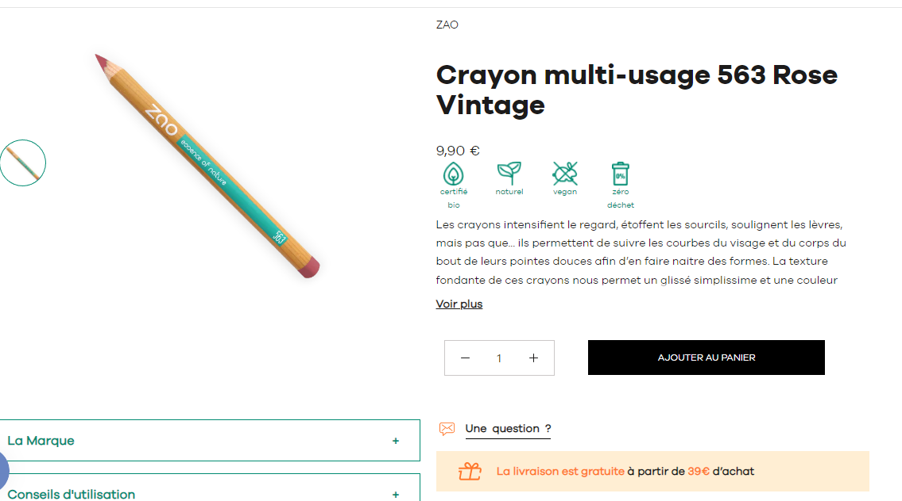
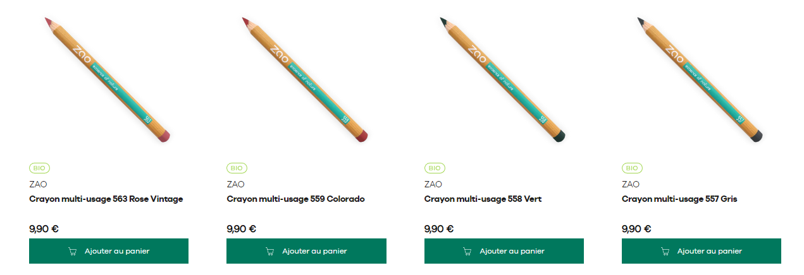
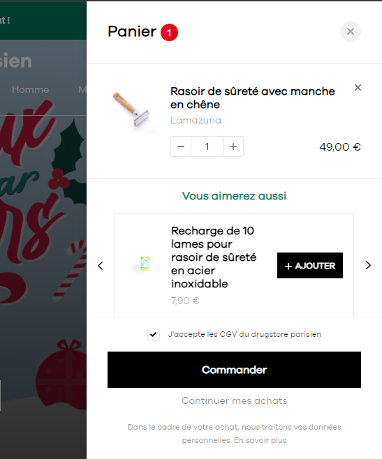
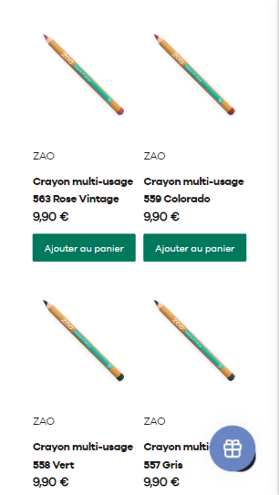

Ledrugstoreparisien.com
Tienda francesa de productos de uso personal desarrollada sobre Shopify. Se realizaron tareas de soporte y mejoras:
- Modificaciones visuales en ficha de producto.
- Agregado de metafields para definir algunos campos adicionales de los productos.
- Cambios de estilos en Sidecart (incluyendo activación y personalización de plugin para Upsell).
- Modificaciones visuales al plugin Boost Product Filter & Search para mostrar y filtrar productos en las collections.
Algunas capturas de pantalla de la tienda



